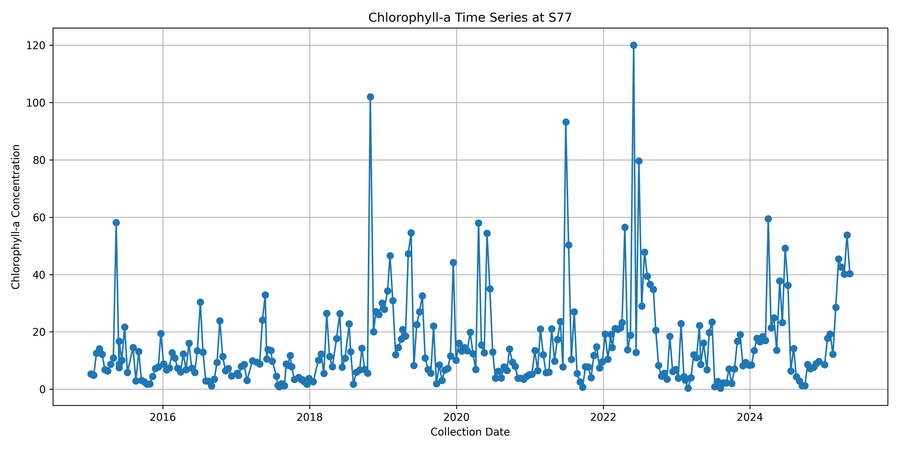
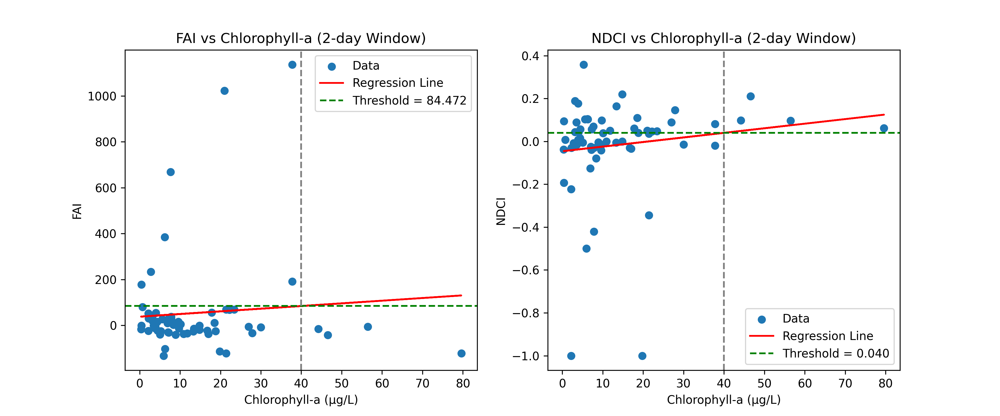
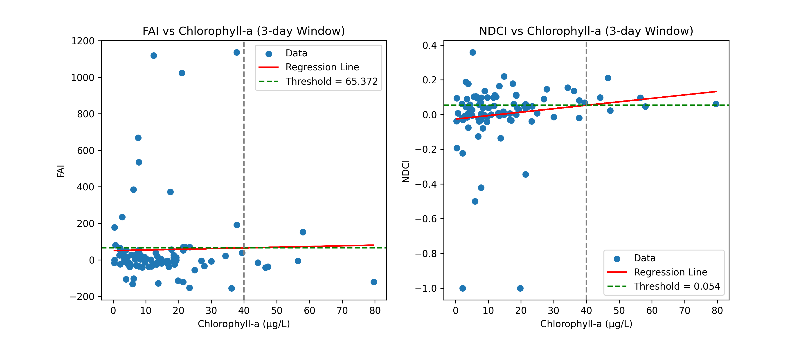
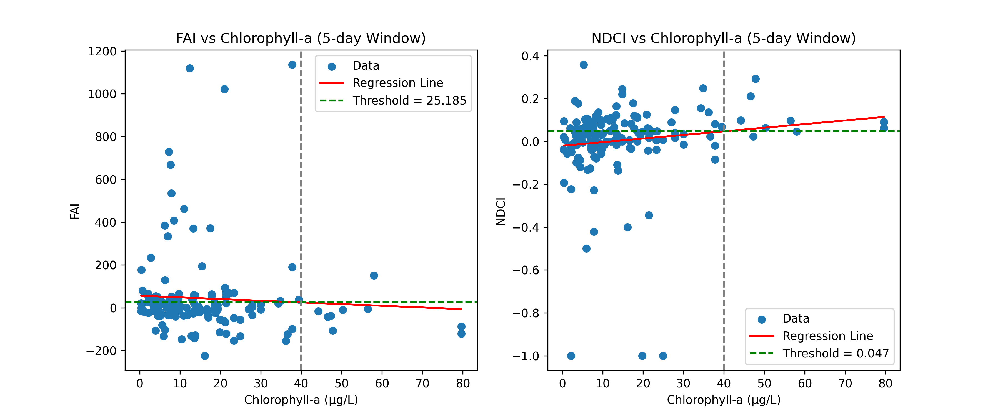
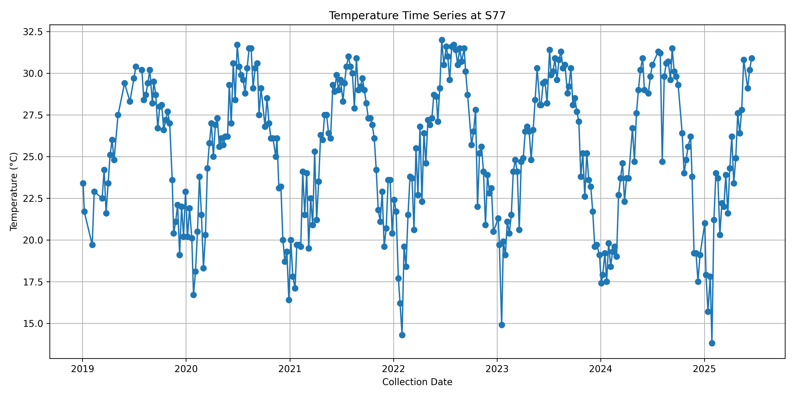
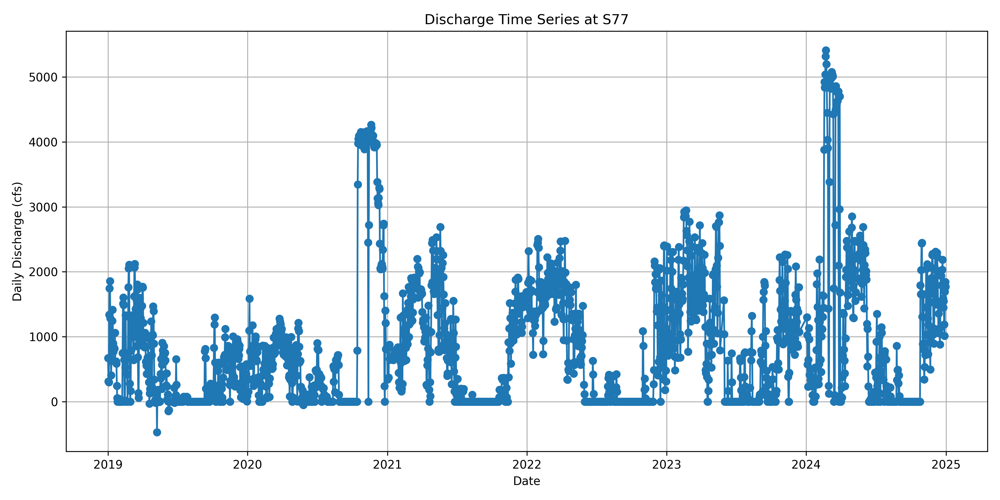
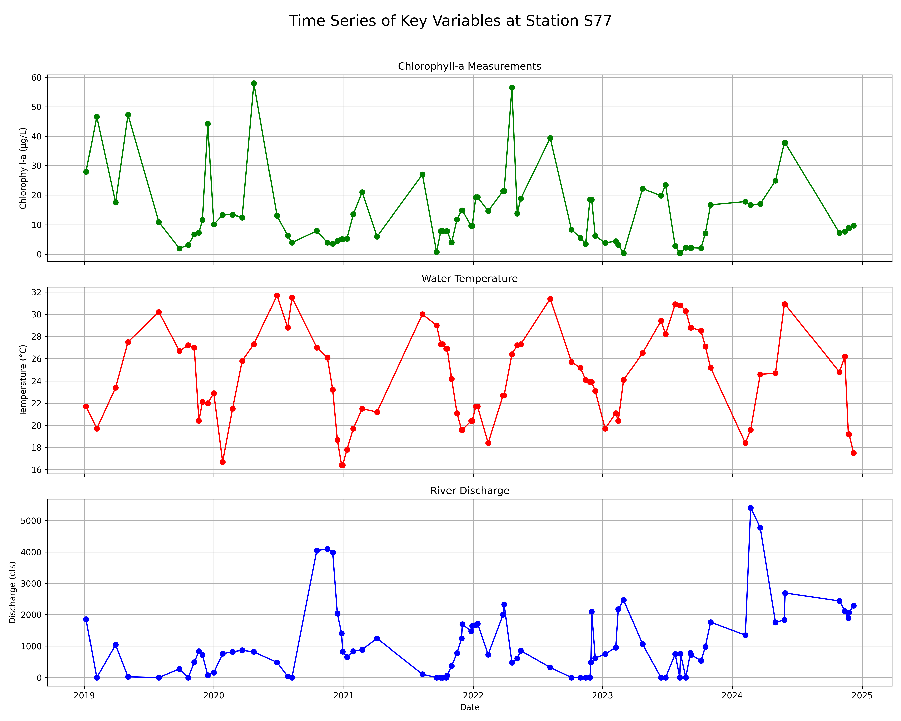
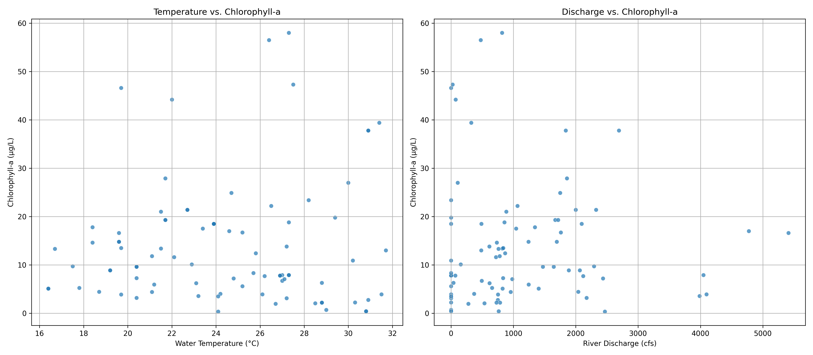
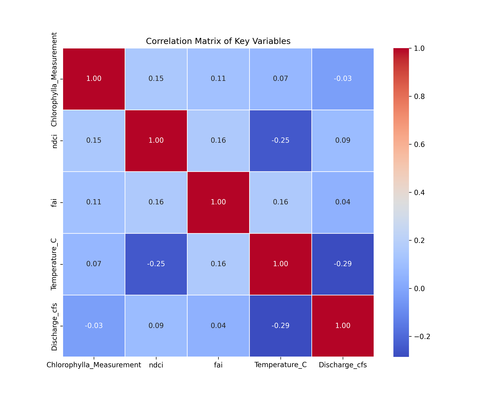

S77 Analysis
Focusing on Station with the Most Data Available First, to Observe Relationships Between Data
1. Isolating S77 Station Data from Satellite and Chlorophyll-a Datasets
Code below loads the master file of all stations and all available Sentinel-2 images, with NDCI and FAI calculated. This code isolates only the S77 station for analysis, and drops dates with no imagery for the station.
import pandas as pd
# Load the CSV file
file_path = "Extracted_Indices_Final.csv"
df = pd.read_csv(file_path)
# Strip any extra whitespace in column names
df.columns = df.columns.str.strip()
# Filter for Station_Id == 'S77'
df_s77 = df[df['Station_Id'] == 'S77']
# Drop rows where 'ndci' or 'fai' are missing
df_s77 = df_s77.dropna(subset=['ndci', 'fai'])
# Preview the result
print(df_s77.head())
# Export to a new CSV
output_path = "Extracted_Indices_S77.csv"
df_s77.to_csv(output_path, index=False)
Results in 216 points of data where imagery was usable imagery was captured at the S77 station.
Code below focuses on the master water quality file, DBHYDRO_WQ_AllStations_Converted.csv, to isolate S77 Chloropyll-a data.
import pandas as pd
# Load the CSV file
file_path = "DBHydro_WQ_AllStations_Converted.csv"
df = pd.read_csv(file_path)
# Strip any extra whitespace in column names
df.columns = df.columns.str.strip()
# Filter for Station ID == 'S77'
df_s77 = df[df['Station ID'] == 'S77']
# Filter for only Chlorophyll-a samples
df_s77 = df_s77[df_s77['Test Name'] == 'CHLOROPHYLL-A(LC)']
# Preview the result
print(df_s77.head())
# Export to a new CSV
output_path = "S77_Chlorophylla_Data.csv"
df_s77.to_csv(output_path, index=False)
print(df_s77.shape)
There are some sample codes that I am going to have to filter through, will use code to generate a list of the unique sample codes under 'Sample Type New'. Unique Values are SAMP, FCEB, EB, and RS. Will check DBHYDRO for what these mean.
SAMP = Sample
FCEB = Field Cleaned Equipment Blank
EB = Equipment Blank
RS = Replicate Sample
Will filter out FCEB, EB, and RS.
# Load the CSV file
file_path = "S77_Chlorophylla_Data.csv"
df = pd.read_csv(file_path)
# Strip any extra whitespace in column names
df.columns = df.columns.str.strip()
# Filter for only Chlorophyll-a samples
df_s77 = df_s77[df_s77['Sample Type New'] == 'SAMP']
# Preview the result
print(df_s77.head())
# Export to a new CSV
output_path = "S77_Chlorophylla_Data_SamplesOnly.csv"
df_s77.to_csv(output_path, index=False)
print(df_s77.shape)
New sample size is 275x47, filtered out 205 samples.
Visualizing s77 Chlorophyll-a Data:
import pandas as pd
import matplotlib.pyplot as plt
# Load the filtered dataset
file_path = "S77_Chlorophylla_Data_SamplesOnly.csv"
df = pd.read_csv(file_path)
# Strip any extra whitespace in column names
df.columns = df.columns.str.strip()
# Convert Collection_Date to datetime
df['Collection_Date'] = pd.to_datetime(df['Collection_Date'], errors='coerce')
# Drop rows with invalid or missing dates or values
df = df.dropna(subset=['Collection_Date', 'Value'])
# Sort by date
df = df.sort_values('Collection_Date')
# Plot
plt.figure(figsize=(12, 6))
plt.plot(df['Collection_Date'], df['Value'], marker='o', linestyle='-')
plt.xlabel('Collection Date')
plt.ylabel('Chlorophyll-a Concentration')
plt.title('Chlorophyll-a Time Series at S77')
plt.grid(True)
plt.tight_layout()
plt.show()

2. Merging Satellite Data with Chlorophyll-a Data
Due to data availability, datasets were merged on 2-day, 3-day, and 5-day windows. This allowed for more data pairings while trying to keep the dates and results of water date close to the date of satellite imagery collection.
Code below is for 2-day window, 3 and 5-day were changed by replacing the number 2s in Step 6.
# Import required libraries
import pandas as pd
from datetime import timedelta
# Step 1: Load the satellite indices CSV
satellite_fp = "Extracted_Indices_S77.csv" # Replace with your full path if needed
sat_df = pd.read_csv(satellite_fp)
# Step 2: Load the chlorophyll-a samples CSV
chl_fp = "S77_Chlorophylla_Data_SamplesOnly.csv" # Replace with your full path if needed
chl_df = pd.read_csv(chl_fp)
# Step 3: Clean column names by stripping whitespace
sat_df.columns = sat_df.columns.str.strip()
chl_df.columns = chl_df.columns.str.strip()
# Step 4: Convert date columns to datetime format
sat_df['date'] = pd.to_datetime(sat_df['date'], errors='coerce')
chl_df['Collection_Date'] = pd.to_datetime(chl_df['Collection_Date'], errors='coerce')
# Step 5: Initialize a new column for matched Chlorophyll-a values
sat_df['Chlorophylla_Measurement'] = None
# Step 6: Iterate through each satellite record and find chlorophyll values within ±5 days
for idx, sat_row in sat_df.iterrows():
sat_date = sat_row['date']
window_start = sat_date - timedelta(days=2)
window_end = sat_date + timedelta(days=2)
# Get a copy of the subset within the ±2 day window
matches = chl_df[
(chl_df['Collection_Date'] >= window_start) &
(chl_df['Collection_Date'] <= window_end)
].copy()
if not matches.empty:
# Calculate absolute time difference to satellite date
matches['TimeDiff'] = (matches['Collection_Date'] - sat_date).abs()
# Choose the closest-in-time chlorophyll sample
# If multiple samples, the sample closest to the imagery collection date will be selected
closest_sample = matches.loc[matches['TimeDiff'].idxmin()]
sat_df.at[idx, 'Chlorophylla_Measurement'] = closest_sample['Value']
# Step 7: Drop satellite rows that did not match any chlorophyll-a samples
sat_df = sat_df.dropna(subset=['Chlorophylla_Measurement'])
# Step 8: Save to new CSV
output_fp = "S77_Satellite_Chlorophylla_for_ThresholdingValues_2DayWindow.csv"
sat_df.to_csv(output_fp, index=False)
print(f"✅ Merged dataset saved to: {output_fp}")
print(sat_df.shape)
Accuracy results of the 2-day, 3-day, and 5-day windows:
2-day Window:
FAI ~ Chlorophyll-a: y = 1.1615 * x + 38.0137
NDCI ~ Chlorophyll-a: y = 0.0021 * x + -0.0458
Index thresholds for 40.0 µg/L Chlorophyll-a:
FAI Threshold: 84.4721
NDCI Threshold: 0.0398
3-day Window:
FAI ~ Chlorophyll-a: y = 0.3801 * x + 50.1661
NDCI ~ Chlorophyll-a: y = 0.0020 * x + -0.0261
Index thresholds for 40.0 µg/L Chlorophyll-a:
FAI Threshold: 65.3719
NDCI Threshold: 0.0535
5-day Window:
FAI ~ Chlorophyll-a: y = -0.7844 * x + 56.5624
NDCI ~ Chlorophyll-a: y = 0.0017 * x + -0.0205
Index thresholds for 40.0 µg/L Chlorophyll-a:
FAI Threshold: 25.1850
NDCI Threshold: 0.0470



3. Isolating and Analyzing S77 Discharge and Water Temperature Data
Starting with Water Temperature Data:
Code below loads filters the water temperature data to S77 and SAMP data.
import pandas as pd
# Load the CSV file
file_path = "WaterTemp_AllStations.csv"
df = pd.read_csv(file_path)
# Strip any extra whitespace in column names
df.columns = df.columns.str.strip()
# Filter for Station_Id == 'S77'
df_s77 = df[df['Station ID'] == 'S77']
# Filter for only Chlorophyll-a samples
df_s77 = df_s77[df_s77['Sample Type New'] == 'SAMP']
# Preview the result
print(df_s77.head())
print(df_s77.shape)
# Export to a new CSV
output_path = "WaterTemp_S77.csv"
df_s77.to_csv(output_path, index=False)
Generating a time series of S77 Water Temperature:
import pandas as pd
import matplotlib.pyplot as plt
# Load the filtered dataset
file_path = "WaterTemp_S77.csv"
df = pd.read_csv(file_path)
# Strip any extra whitespace in column names
df.columns = df.columns.str.strip()
# Convert Collection_Date to datetime
df['Collection_Date'] = pd.to_datetime(df['Collection_Date'], errors='coerce')
# Drop rows with invalid or missing dates or values
df = df.dropna(subset=['Collection_Date', 'Value'])
# Sort by date
df = df.sort_values('Collection_Date')
# Plot
plt.figure(figsize=(12, 6))
plt.plot(df['Collection_Date'], df['Value'], marker='o', linestyle='-')
plt.xlabel('Collection Date')
plt.ylabel('Temperature (°C)')
plt.title('Temperature Time Series at S77')
plt.grid(True)
plt.tight_layout()
plt.show()

Switching to Discharge Data:
Code below filters to the S77_S station (same location as S77, but is where the discharge flow rate is measured).
import pandas as pd
# Load the CSV file
file_path = "S79andS77_DailyAverageDischargeData.csv"
df = pd.read_csv(file_path)
print(f'Original df size: {df.shape}')
# Strip any extra whitespace in column names
df.columns = df.columns.str.strip()
# Filter for Station_Id == 'S77'
df_s77 = df[df['Station'] == 'S77_S']
# Preview the result
print('')
print(df_s77.head())
print('')
print(f'Only S77 df size: {df_s77.shape}')
# Export to a new CSV
output_path = "S77_DischargeData.csv"
df_s77.to_csv(output_path, index=False)
Generating a time series of S77 Discharge:
import pandas as pd
import matplotlib.pyplot as plt
# Load the filtered dataset
file_path = "S77_DischargeData.csv"
df = pd.read_csv(file_path)
# Strip any extra whitespace in column names
df.columns = df.columns.str.strip()
# Convert Collection_Date to datetime
df['Date'] = pd.to_datetime(df['Date'], errors='coerce')
# Drop rows with invalid or missing dates or values
df = df.dropna(subset=['Date', 'Data Value'])
# Sort by date
df = df.sort_values('Date')
# Plot
plt.figure(figsize=(12, 6))
plt.plot(df['Date'], df['Data Value'], marker='o', linestyle='-')
plt.xlabel('Date')
plt.ylabel('Daily Discharge (cfs)')
plt.title('Discharge Time Series at S77')
plt.grid(True)
plt.tight_layout()
plt.savefig('S77_Discharge_TimeSeries.png', dpi=300)
plt.show()

4. Merging Temperature and Discharge Data to Satellite and Chlorophyll-a Data
Merging the datasets together, utilizing the 3-day window due to highest accuracy from the window periods.
Applying a 3-day window to the temperature and discharge data as well, to better match up to the Satellite and Chlorophyll-a data:
import pandas as pd
# --- Step 1: Define File Paths ---
# Make sure these CSV files are in the same directory as your Jupyter Notebook
satellite_file = 'S77_Satellite_Chlorophylla_for_ThresholdingValues_3DayWindow.csv'
temp_file = 'WaterTemp_S77.csv'
discharge_file = 'S77_DischargeData.csv'
# --- Step 2: Load and Prepare the DataFrames ---
# Load the main satellite data
try:
df_sat = pd.read_csv(satellite_file)
# Convert 'date' column to datetime objects for accurate merging
df_sat['date'] = pd.to_datetime(df_sat['date'])
print("Satellite data loaded successfully.")
except FileNotFoundError:
print(f"Error: Could not find the file '{satellite_file}'")
raise
# Load and prepare the discharge data (still using an exact match for this)
try:
df_discharge = pd.read_csv(discharge_file)
df_discharge['Date'] = pd.to_datetime(df_discharge['Date'], format='%d-%b-%y')
df_discharge = df_discharge[['Date', 'Data Value']].rename(
columns={'Date': 'date', 'Data Value': 'Discharge_cfs'}
)
# Perform the initial merge for discharge
df_merged = pd.merge(df_sat, df_discharge, on='date', how='left')
print("Discharge data loaded and merged.")
except FileNotFoundError:
print(f"Warning: Could not find the discharge file '{discharge_file}'.")
df_merged = df_sat # If no file, continue with just the satellite data
except Exception as e:
print(f"An error occurred while processing the discharge file: {e}")
df_merged = df_sat
# Load and prepare the temperature data
try:
df_temp = pd.read_csv(temp_file)
df_temp = df_temp[df_temp['Test Name'] == 'Temperature']
df_temp['Date'] = pd.to_datetime(df_temp['Date'])
df_temp = df_temp[['Date', 'Value']].rename(
columns={'Date': 'date', 'Value': 'Temperature_C'}
)
print("Temperature data loaded and prepared.")
except FileNotFoundError:
print(f"Warning: Could not find the temperature file '{temp_file}'.")
df_temp = None
except Exception as e:
print(f"An error occurred while processing the temperature file: {e}")
df_temp = None
# --- Step 3: Merge Temperature Data with a 3-Day Window ---
if df_temp is not None:
# IMPORTANT: merge_asof requires both dataframes to be sorted by the merge key ('date')
df_merged = df_merged.sort_values(by='date')
df_temp = df_temp.sort_values(by='date')
# Use merge_asof to find the nearest temperature reading within the tolerance
df_final = pd.merge_asof(
df_merged,
df_temp,
on='date',
direction='nearest', # Finds the closest date (before or after)
tolerance=pd.Timedelta('3 days') # Sets the maximum +/- window
)
print("\nMerged with temperature data using a 3-day window.")
else:
df_final = df_merged # If no temp data, the final df is the one with discharge
# --- Step 4: Inspect and Save the Final Dataset ---
print("\n--- Final Merged DataFrame ---")
print(df_final.head())
# Check how many of the new columns are empty (null)
print("\n--- Missing Values in New Columns ---")
print(df_final[['Discharge_cfs', 'Temperature_C']].isnull().sum())
# Define the output filename
output_filename = 'S77_Merged_Data_3DayWindow.csv'
# Save the final merged dataframe to a new CSV file
df_final.to_csv(output_filename, index=False)
print(f"\nSuccessfully created the merged file: '{output_filename}'")
5. Exploratory Data Analysis Before Models
Recommended by AI to better understand the dataset and generate more figures
Code block recommended by AI for this analysis:
import pandas as pd
import matplotlib.pyplot as plt
import seaborn as sns
# --- Step 1: Load Your Final Merged Dataset ---
file_path = 'S77_Merged_Data_3DayWindow.csv'
try:
df = pd.read_csv(file_path)
# Ensure the 'date' column is a datetime object for plotting
df['date'] = pd.to_datetime(df['date'])
print("Merged dataset loaded successfully.")
except FileNotFoundError:
print(f"FATAL ERROR: The file '{file_path}' was not found.")
print("Please ensure the merged CSV from the previous step is in the same directory.")
raise
# --- Step 2: Prepare Data for Analysis ---
# For robust analysis, we'll drop rows that have missing environmental data
df_analysis = df.dropna(subset=['Temperature_C', 'Discharge_cfs']).copy()
print(f"Original data points: {len(df)}")
print(f"Data points for analysis (after removing nulls): {len(df_analysis)}")
# --- Step 3: Visualize and Save Time Series Data ---
print("\nGenerating Time Series plots...")
fig, axes = plt.subplots(3, 1, figsize=(15, 12), sharex=True)
fig.suptitle('Time Series of Key Variables at Station S77', fontsize=18)
# Plot 1: Chlorophyll-a
axes[0].plot(df_analysis['date'], df_analysis['Chlorophylla_Measurement'], color='green', marker='o', linestyle='-')
axes[0].set_ylabel('Chlorophyll-a (µg/L)')
axes[0].set_title('Chlorophyll-a Measurements')
axes[0].grid(True)
# Plot 2: Water Temperature
axes[1].plot(df_analysis['date'], df_analysis['Temperature_C'], color='red', marker='o', linestyle='-')
axes[1].set_ylabel('Temperature (°C)')
axes[1].set_title('Water Temperature')
axes[1].grid(True)
# Plot 3: Discharge
axes[2].plot(df_analysis['date'], df_analysis['Discharge_cfs'], color='blue', marker='o', linestyle='-')
axes[2].set_ylabel('Discharge (cfs)')
axes[2].set_title('River Discharge')
axes[2].set_xlabel('Date')
axes[2].grid(True)
plt.tight_layout(rect=[0, 0, 1, 0.96])
# --- ADDED LINE: Save the figure ---
plt.savefig('time_series_plots.png', dpi=300) # dpi=300 for high resolution
plt.show()
# --- Step 4: Visualize and Save Relationships with Scatter Plots ---
print("\nGenerating Scatter plots...")
plt.figure(figsize=(16, 7))
# Scatter 1: Temperature vs. Chlorophyll-a
plt.subplot(1, 2, 1)
sns.scatterplot(data=df_analysis, x='Temperature_C', y='Chlorophylla_Measurement', alpha=0.7)
plt.title('Temperature vs. Chlorophyll-a')
plt.xlabel('Water Temperature (°C)')
plt.ylabel('Chlorophyll-a (µg/L)')
plt.grid(True)
# Scatter 2: Discharge vs. Chlorophyll-a
plt.subplot(1, 2, 2)
sns.scatterplot(data=df_analysis, x='Discharge_cfs', y='Chlorophylla_Measurement', alpha=0.7)
plt.title('Discharge vs. Chlorophyll-a')
plt.xlabel('River Discharge (cfs)')
plt.ylabel('Chlorophyll-a (µg/L)')
plt.grid(True)
plt.tight_layout()
# --- ADDED LINE: Save the figure ---
plt.savefig('scatter_plots.png', dpi=300)
plt.show()
# --- Step 5: Quantify and Save Relationships with a Correlation Matrix ---
print("\nGenerating Correlation Matrix Heatmap...")
# Select only the key numerical columns for the correlation matrix
correlation_cols = ['Chlorophylla_Measurement', 'ndci', 'fai', 'Temperature_C', 'Discharge_cfs']
correlation_matrix = df_analysis[correlation_cols].corr()
# Create a heatmap to visualize the matrix
plt.figure(figsize=(10, 8))
sns.heatmap(correlation_matrix, annot=True, cmap='coolwarm', fmt='.2f', linewidths=.5)
plt.title('Correlation Matrix of Key Variables')
# --- ADDED LINE: Save the figure ---
plt.savefig('correlation_heatmap.png', dpi=300)
plt.show()
print("\nExploratory Data Analysis Complete. Plots saved to your directory.")



Time Series Plots
Seasonality: Temperature shows a clear, predictable seasonal cycle. Chlorophyll-a also appears to be seasonal, with most of the high-concentration events occurring in the cooler winter and spring months.
Discharge Events: Discharge is highly variable and driven by specific events (likely rainfall and water management). There are long periods of low flow punctuated by massive spikes in discharge.
Scatter Plots & Correlation
These plots provide the most important insights for building a predictive model.
Discharge is a Key Driver: The scatter plot shows a very distinct pattern: high chlorophyll-a blooms (> 40 µg/L) only occur when river discharge is low (less than ~2,000 cfs). When discharge is high, blooms appear to be flushed out of the system, keeping chlorophyll-a concentrations low. The correlation of -0.24 confirms this negative relationship.
Temperature Has a "Sweet Spot": The relationship with temperature is not a simple line. The highest chlorophyll-a values tend to cluster in a moderate temperature range (approx. 20-27°C). Very hot and very cold temperatures are both associated with lower chlorophyll-a levels. The weak correlation of -0.12 confirms that a simple linear model for temperature won't work well.
Satellite Indices: The heatmap confirms our previous findings. NDCI has the best (but still weak) positive correlation with Chlorophyll-a at 0.17. FAI shows no meaningful correlation.
Summary & Next Steps
The exploratory analysis was a success. We've moved from a weak correlation with a single index to a much clearer understanding of the system's drivers.
Your primary predictors for a bloom appear to be low discharge and moderate temperatures.
A simple linear model will likely not be very accurate because of the non-linear relationship with temperature.